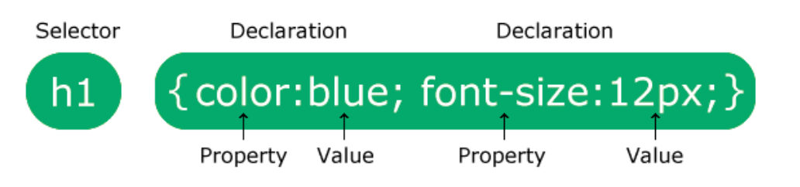

<h1>CSS - Cascading Style Sheets</h1>

<h2>Składnia CSS</h2>
<br>

<h2>Sposoby używania stylów:</h2>
    <h3>- inline: </h3>
        <p style="color:red;">Styl inline - wewnątrz kodu html - niezalecane</p>
    <h3>- internal:</h3>
        <p>w sekcji <HEAD> wstawiamy znacznik <STYLE> </p>
    <h3>- external:</h3>
        <p>Style umieszczone w osobnym pliku</p>
    

